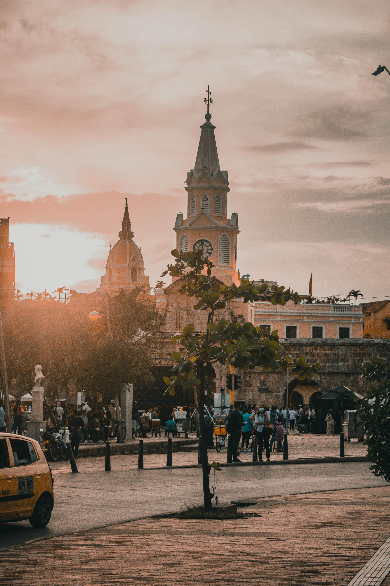
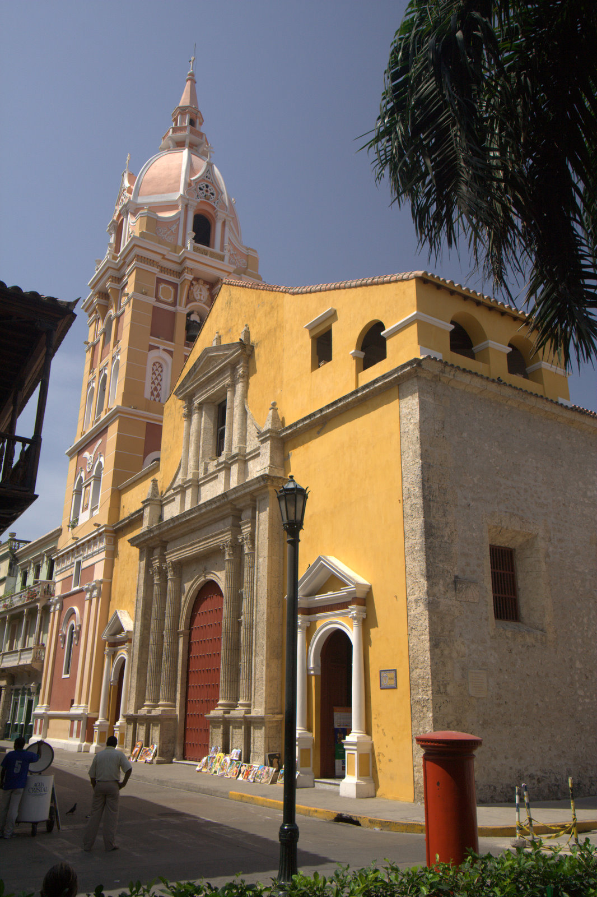
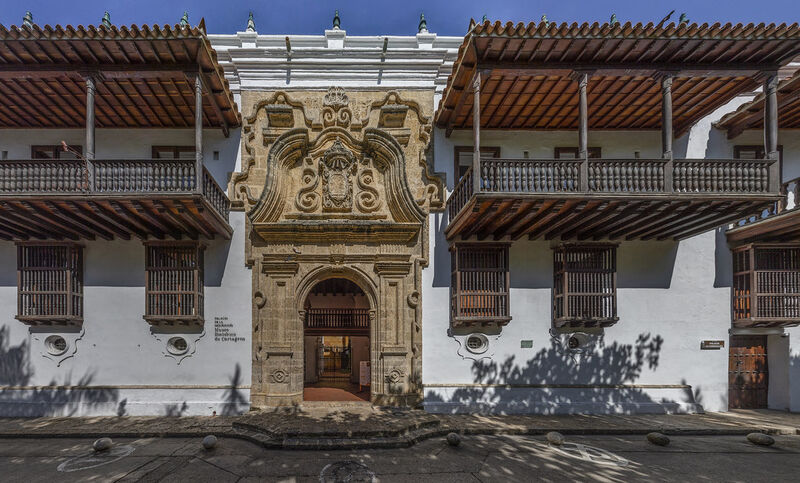
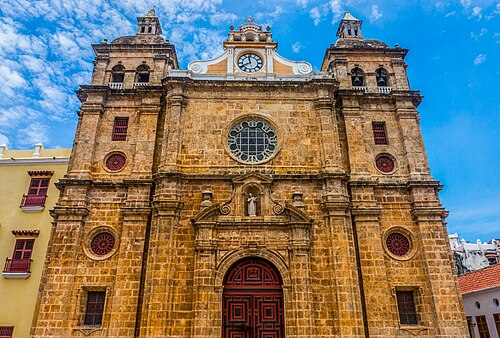
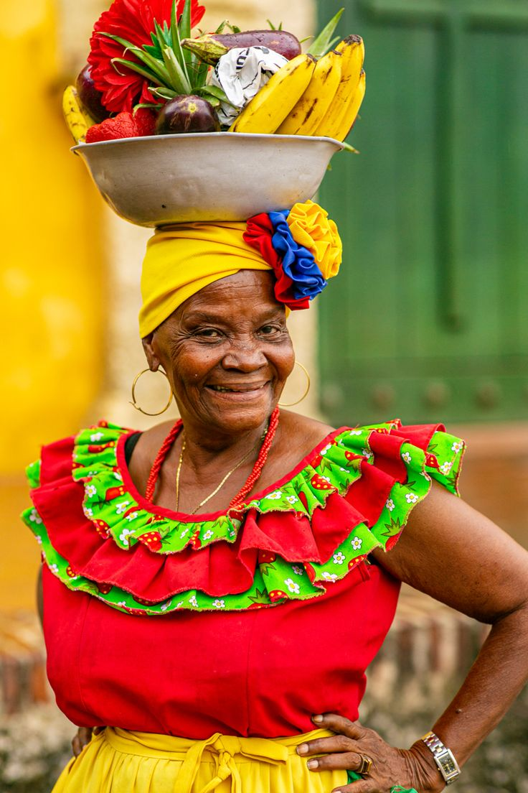

Cartagena es una ciudad de capas: bajo sus murallas coloniales late una cultura afro-caribeña, indígena y española que se fusionó durante cinco siglos para crear una identidad única, propia e irrepetible.

Fundada en 1533 sobre el poblado indígena Calamarí
Pedro de Heredia fundó Cartagena de Indias el 1 de junio de 1533 sobre el asentamiento indígena Calamarí. Se convirtió en el principal puerto del Imperio español en América del Sur, por donde salían las riquezas del continente hacia Europa y llegaban miles de esclavos africanos.
En 1984, la UNESCO declaró su Centro Histórico Patrimonio Cultural de la Humanidad, reconociendo su arquitectura colonial, sus murallas y el valor histórico de cada una de sus calles y plazas.
Arquitectura Colonial: El Centro Amurallado
El Centro Amurallado es un museo a cielo abierto exclusivo de Cartagena. Sus casas de dos plantas con balcones floridos en madera tallada, sus iglesias barrocas del siglo XVII y sus plazas empedradas son la imagen más icónica de Colombia en el mundo. Los colores vibrantes —amarillo colonial, azul caribe, ocre y verde— de sus fachadas son tan propios de Cartagena que se reconocen al instante.
Edificios clave: la Catedral de Santa Catalina de Alejandría (iniciada en 1577, la más antigua de Colombia), el Palacio de la Inquisición (1770, hoy museo), y la Iglesia y Convento de San Pedro Claver, donde reposan los restos del apóstol de los esclavos.



Los Barrios con Alma de Cartagena
La Palenquera: Símbolo Vivo de Cartagena

La Palenquera es el símbolo más universal de Cartagena. Son mujeres afrodescendientes provenientes de San Basilio de Palenque —el primer pueblo libre de esclavos en América, fundado por Benkos Biohó a 70 km de Cartagena— que venden frutas tropicales recorriendo sus calles con coloridos trajes de pollera y batea en la cabeza.
Su imagen representa la resistencia africana y la libertad conquistada a sangre y fuego en tierras cartageneras. San Basilio de Palenque fue declarado Patrimonio Inmaterial de la Humanidad por la UNESCO en 2005, reconociendo también su lengua criolla, el palenquero.
Festivales Propios de Cartagena
🎬 FICCI — El Festival Internacional de Cine de Cartagena, el más antiguo de América Latina (desde 1960), proyecta películas de todo el mundo en el Teatro Heredia y los espacios mágicos del Centro Histórico.
🎉 Fiestas de Independencia (11 de Noviembre) — La celebración más grande de Cartagena conmemora su declaración de Independencia de 1811. Días de comparsas, disfraces, champeta, cumbia y porro en cada esquina de la ciudad.
📚 Festival Hay Cartagena — Festival literario internacional que transforma las plazas y teatros coloniales de Cartagena en escenarios de pensamiento, debate y cultura para el mundo.